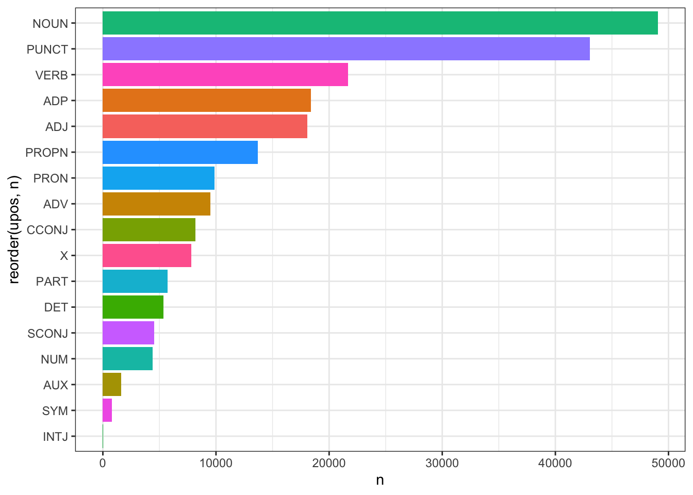
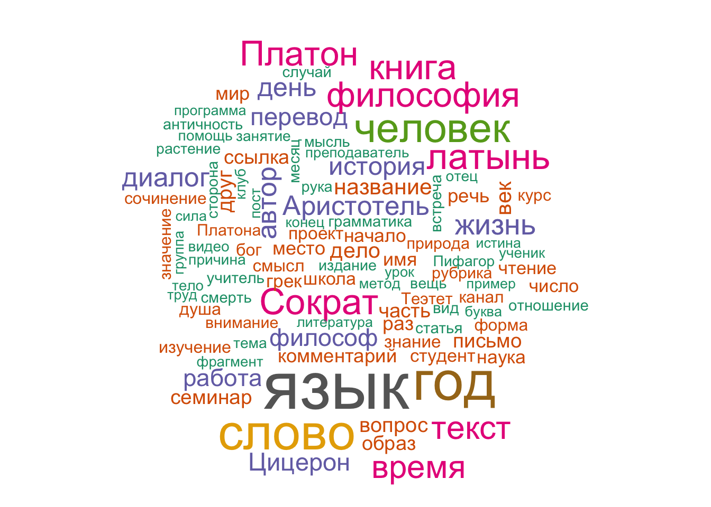
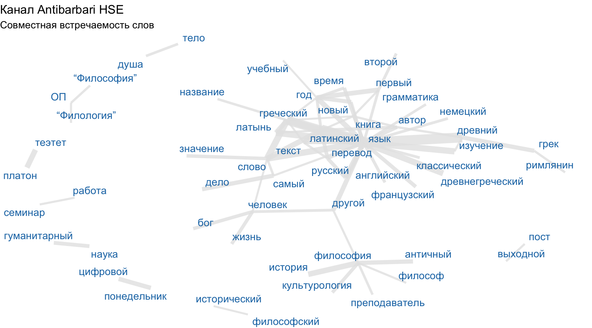
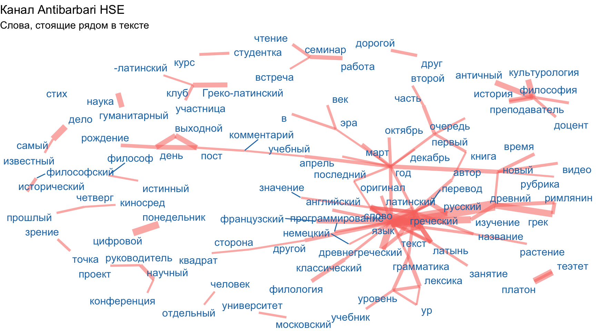
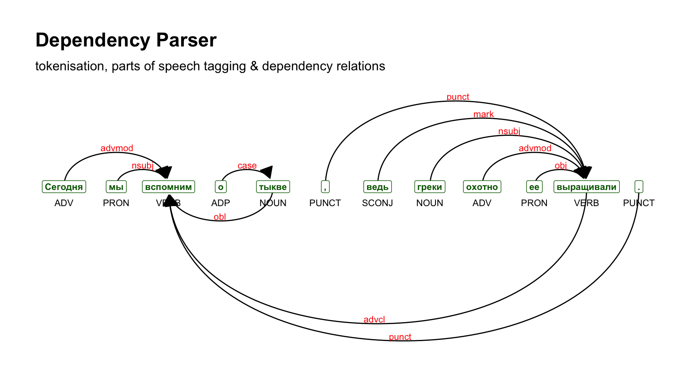

library(tidyverse)
library(tidytext)
library(tokenizers)9 Токенизация и лемматизация
Токенизация — процесс разделения текста на составляющие (их называют «токенами»). Токенами могут быть слова, символьные или словесные энграмы (n-grams), то есть сочетания символов или слов, даже предложения или параграфы. Все зависит от того, какие единицы вам нужны для анализа.
Визуально процесс токенизации можно представить так:

Токенизировать можно в базовом R, и Jockers (2014) прекрасно показывает, как это можно делать. Но вы воспользуемся двумя пакетами, которые предназначены специально для работы с текстовыми данными и разделяют идеологию tidyverse. Оба пакета придется загрузить отдельно; подробнее о работе с ними стоит посмотреть две книги: Silge и Robinson (2017) и Hvitfeldt и Silge (2022).
Для анализа воспользуемся датасетом, который мы подготовили в предыдущем уроке, посвященному парсингу html. Его можно забрать отсюда.
load("../data/messages_tbl.RData")
messages_tbl9.1 Токенизация в tidytext
Функция unnest_tokens() из пакета tidytext принимает на входе тиббл, название столбца, в котором хранится текст для токенизации, а также название нового столбца, куда будут “сложены” отдельные токены (как мы увидим, это не всегда слова в привычном смысле слова).
unnest_tokens(
tbl,
output,
input,
token = "words",
format = c("text", "man", "latex", "html", "xml"),
to_lower = TRUE,
drop = TRUE,
collapse = NULL,
...
)Аргумент token принимает следующие значения:
- “words” (default),
- “characters”,
- “character_shingles”,
- “ngrams”,
- “skip_ngrams”,
- “sentences”,
- “lines”,
- “paragraphs”,
- “regex”,
- “ptb” (Penn Treebank).
Используя уже знакомую функцию map, можно запустить unnest_tokens() с разными аргументами:
test <- messages_tbl |>
filter(row_number() == 8) |>
select(text)
testparams <- tribble(
~tbl, ~output, ~input, ~token,
test, "word", "text", "words",
test, "sentence", "text", "sentences",
test, "char", "text", "characters",
)
paramsparams |>
pmap(unnest_tokens) |>
head()[[1]]
# A tibble: 34 × 1
word
<chr>
1 филеб
2 семинар
3 3
4 марта
5 2022
6 сократ
7 и
8 протарх
9 решают
10 следовать
# ℹ 24 more rows
[[2]]
# A tibble: 4 × 1
sentence
<chr>
1 "филеб."
2 "семинар 3 марта 2022."
3 "сократ и протарх решают следовать за логосом, который указывает, что невозмо…
4 "познанию же надежного и чистого уделяются \"прекраснейшие\" имена: ум и разу…
[[3]]
# A tibble: 209 × 1
char
<chr>
1 ф
2 и
3 л
4 е
5 б
6 с
7 е
8 м
9 и
10 н
# ℹ 199 more rowsСледующие значения аргумента token требуют также аргумента n:
params <- tribble(
~tbl, ~output, ~input, ~token, ~n,
test, "ngram", "text", "ngrams", 3,
test, "shingles", "text", "character_shingles", 3
)
params |>
pmap(unnest_tokens) |>
head()[[1]]
# A tibble: 32 × 1
ngram
<chr>
1 филеб семинар 3
2 семинар 3 марта
3 3 марта 2022
4 марта 2022 сократ
5 2022 сократ и
6 сократ и протарх
7 и протарх решают
8 протарх решают следовать
9 решают следовать за
10 следовать за логосом
# ℹ 22 more rows
[[2]]
# A tibble: 207 × 1
shingles
<chr>
1 фил
2 иле
3 леб
4 ебс
5 бсе
6 сем
7 еми
8 мин
9 ина
10 нар
# ℹ 197 more rowslibrary(janeaustenr)
library(dplyr)
library(tidytext)
library(stringr)
original_books <- austen_books() |>
group_by(book) |>
mutate(text = str_to_lower(text),
chapter = cumsum(str_detect(text, "^chapter [\\divxlc]"))) |>
ungroup()
tidy_books <- original_books |>
unnest_tokens(word, text)Теперь разделим весь архив Antibarbari на слова и посмотрим, что получилось.
antibarbari_tokens <- messages_tbl |>
unnest_tokens("word", "text")
antibarbari_tokensПодумайте, что пошло не так и как с этим можно справиться.
9.2 Токенизация в tokenizers
При работе с данными в текстовом формате unnest_tokens() опирается на пакет tokenizers, но tokenize_words требует на входе вектор, а не тиббл. Несколько полезных аргументов, о которых стоит помнить: strip_non_alphanum (удаляет пробельные символы и пунктуацию), strip_punct (удаляет пунктуацию), strip_numeric (удаляет числа).
words_no_punct <- tokenize_words(test$text, strip_punct = T)
words_no_punct[[1]]
[1] "филеб" "семинар" "3" "марта"
[5] "2022" "сократ" "и" "протарх"
[9] "решают" "следовать" "за" "логосом"
[13] "который" "указывает" "что" "невозможно"
[17] "надежное" "познание" "ненадежных" "вещей"
[21] "познанию" "же" "надежного" "и"
[25] "чистого" "уделяются" "прекраснейшие" "имена"
[29] "ум" "и" "разумение" "https"
[33] "youtu.be" "dwbnvtoi4we" words_punct <- tokenize_words(test$text, strip_punct = F)
words_punct[[1]]
[1] "филеб" "." "семинар" "3"
[5] "марта" "2022" "." "сократ"
[9] "и" "протарх" "решают" "следовать"
[13] "за" "логосом" "," "который"
[17] "указывает" "," "что" "невозможно"
[21] "надежное" "познание" "ненадежных" "вещей"
[25] "." "познанию" "же" "надежного"
[29] "и" "чистого" "уделяются" "\""
[33] "прекраснейшие" "\"" "имена" ":"
[37] "ум" "и" "разумение" "."
[41] "https" ":" "/" "/"
[45] "youtu.be" "/" "dwbnvtoi4we" 9.3 Скипграмы
Скипграмы, или n-грамы с пропусками, применяются в некоторых языковых моделях.
skipgrams <- tokenize_skip_ngrams(test$text, n=3)
skipgrams[[1]][1:21] [1] "филеб" "филеб семинар" "филеб 3"
[4] "филеб семинар 3" "филеб семинар марта" "филеб 3 марта"
[7] "филеб 3 2022" "семинар" "семинар 3"
[10] "семинар марта" "семинар 3 марта" "семинар 3 2022"
[13] "семинар марта 2022" "семинар марта сократ" "3"
[16] "3 марта" "3 2022" "3 марта 2022"
[19] "3 марта сократ" "3 2022 сократ" "3 2022 и" Функция считает все энграмы длиной до трех включительно (при этом по умолчанию аргумент k, т.е. величина “пропуска” = 1). Чтобы считать только 3-грамы, надо немного поправить код:
skipgrams <- tokenize_skip_ngrams(test$text, n=3, n_min = 3)
skipgrams[[1]][1:12] [1] "филеб семинар 3" "филеб семинар марта" "филеб 3 марта"
[4] "филеб 3 2022" "семинар 3 марта" "семинар 3 2022"
[7] "семинар марта 2022" "семинар марта сократ" "3 марта 2022"
[10] "3 марта сократ" "3 2022 сократ" "3 2022 и" 9.4 Лемматизация и частеречная разметка
Помимо деления на токены, предварительная обработка текста может включать в себя лемматизацию, то есть приведение слов к начальной форме (лемме) и синтаксическую разметку.
Для аннотации мы воспользуемся морфологическим и синтаксическим анализатором UDPipe (Universal Dependencies Pipeline), который существует в виде одноименного пакета в R. В отличие от других анализаторов, доступных в R, он позволяет работать со множеством языков (всего 65), для многих из которых представлено несколько моделей, обученных на разных данных.
Прежде всего нужно выбрать и загрузить модель (список). Берем модель, обученную на корпусе СинТагРус (сокр. от англ. Syntactically Tagged Russian text corpus, т.е. «синтаксически аннотированный корпус русских текстов»). Предварительно токенизировать текст не стоит: это может снизить точность модели. Переведение всех символов в нижний регистр тоже может ухудшить результат.
library(udpipe)
# скачиваем модель в рабочую директорию
udpipe_download_model(language = "russian-syntagrus")
# загружаем модель
russian_syntagrus <- udpipe_load_model(file = "russian-syntagrus-ud-2.5-191206.udpipe")
# аннотируем
antibarbari_annotate <- udpipe_annotate(russian_syntagrus, messages_tbl$text, docid = messages_tbl$id)Результат возвращается в формате CONLL-U; это широко применяемый формат представления результат морфологического и синтаксического анализа текстов. Вот разбора предложения в Conll-U:
Cтроки слов содержат следующие поля:
- ID: индекс слова, целое число, начиная с 1 для каждого нового предложения; может быть диапазоном токенов с несколькими словами.
- FORM: словоформа или знак препинания.
- LEMMA: Лемма или основа словоформы.
- UPOSTAG: универсальный тег части речи.
- XPOSTAG: тег части речи для конкретного языка.
- FEATS: список морфологических характеристик.
- HEAD: заголовок текущего токена, который является либо значением ID, либо нулем (0).
- DEPREL: Universal Stanford dependency relation к (root iff HEAD = 0) или определенному зависящему от языка подтипу.
- DEPS: Список вторичных зависимостей.
- MISC: любая другая аннотация.
Для работы данные удобнее трансформировать в прямоугольный формат.
antibarbari_ann_tbl <- as_tibble(antibarbari_annotate)
antibarbari_ann_tblЕсли полистать эту таблицу, можно заметить несколько ошибок: странное существительное “тимя” (имя “Тимей” понято как форма творительного падежа), в число имен собственных попали гиперссылки, и т.п. Кое-что можно поправить за счет предварительной “уборки” с использованием регулярных выражений.
9.5 Морфологическая разметка
Морфологическая разметка, которую мы получили, дает возможность выбирать и группировать различные части речи. Например, прилагательные.
propn <- antibarbari_ann_tbl |>
filter(upos == "ADJ") |>
select(token, lemma, upos)
propn9.6 Распределение частей речи
Как-то раз Бен Блатт задался целью проверить знаменитый афоризм Стивена Кинга о том, что «дорога в ад вымощена наречиями». Правда ли, что великие писатели реже используют наречия на -ly? Он получил достаточно любопытные результаты, в частности выяснилось, что Генри Мелвилл и Джейн Остин представляют собой скорее исключение из этого правила, но с двумя важными оговорками: во-первых, в 19 в. наречия в целом используют чаще, чем 20-м; а во-вторых, в признанных шедеврах отдельных авторов наречий, действительно, бывает меньше. Например, в романе Стейнбека «Зима тревоги нашей» их меньше всего. Больше всего наречий у авторов фанфиков, непрофессиональных писателей.
Посчитать части речи (расшифровка тегов UPOS по ссылке) можно так:
antibarbari_pos_counts <- antibarbari_ann_tbl |>
group_by(upos) |>
count() |>
arrange(-n)
antibarbari_pos_countsСтолбиковая диаграмма позволяет наглядно представить такого рода данные:
antibarbari_pos_counts |>
ggplot(aes(x = reorder(upos, n), y = n, fill = upos)) +
geom_bar(stat = "identity", show.legend = F) +
coord_flip() +
theme_bw()
За буквой X скрываются иностранные языки, но сюда могут попасть и теги, и гиперссылки. Проверим.
antibarbari_ann_tbl |>
filter(upos == "X") |>
select(lemma) |>
count(lemma) |>
arrange(-n)За SYM скрываются эмотиконы и математические символы.
antibarbari_ann_tbl |>
filter(upos == "SYM") |>
select(lemma) |>
count(lemma) |>
arrange(-n)Можно отобрать наиболее частотные слова для любой части речи.
nouns <- antibarbari_ann_tbl |>
filter(upos %in% c("NOUN", "PROPN")) |>
count(lemma) |>
arrange(-n) |>
filter(lemma != "NA") |>
filter(nchar(lemma) > 2) |>
slice_head(n = 100)
nounslibrary(wordcloud)Loading required package: RColorBrewerlibrary(RColorBrewer)
pal <- RColorBrewer::brewer.pal(8, "Dark2")
nouns %>%
with(wordcloud(lemma, n, max.words = 100, colors = pal))
9.7 Совместная встречаемость слов
Функция cooccurence() из пакета udpipe позволяет выяснить, сколько раз некий термин встречается совместно с другим термином, например:
- слова встречаются в одном и том же документе/предложении/параграфе;
- слова следуют за другим словом;
- слова находятся по соседству с другим словом на расстоянии n слов.
Код ниже позволяет выяснить, какие слова встречаются в одном предложении:
antibarbari_subset <- subset(antibarbari_ann_tbl, upos %in% c("NOUN", "ADJ"))
cooc1 <- cooccurrence(antibarbari_subset, term = "lemma", group = c("doc_id", "sentence_id")) |>
as_tibble() |>
filter(cooc > 25)
cooc1Этот результат легко визуализировать, используя пакет ggraph:
library(igraph)
library(ggraph)
wordnetwork <- graph_from_data_frame(cooc1)
ggraph(wordnetwork, layout = "fr") +
geom_edge_link(aes(width = log(cooc)), alpha = 0.8, edge_colour = "grey90", show.legend=FALSE) +
geom_node_text(aes(label = name), col = "#1f78b4", size = 4, repel = TRUE) +
theme_void() +
labs(title = "Канал Antibarbari HSE", subtitle = "Совместная встречаемость слов")
Чтобы узнать, какие слова чаще стоят рядом, используем ту же функцию, но с другими аргументами:
cooc2 <- cooccurrence(antibarbari_subset$lemma, relevant = antibarbari_subset$upos %in% c("NOUN", "ADJ"), skipgram = 1) |>
as_tibble() |>
filter(cooc > 10)
cooc2wordnetwork <- graph_from_data_frame(cooc2)
ggraph(wordnetwork, layout = "fr") +
geom_edge_link(aes(width = log(cooc), edge_colour = "grey90", edge_alpha=0.8), show.legend = F) +
geom_node_text(aes(label = name), col = "#1f78b4", size = 4, repel = T) +
labs(title = "Канал Antibarbari HSE", subtitle = "Слова, стоящие рядом в тексте") +
theme_void()
9.8 Синтаксическая разметка
Для анализа выберем одно предложение.
antibarbari_sent <- antibarbari_ann_tbl |>
filter(doc_id == "doc367", sentence_id == 3) |>
select(sentence, sentence_id, token_id, head_token_id, dep_rel, token_id, token, upos)
antibarbari_sent |>
select(-sentence)А вот все предложение.
antibarbari_sent |>
distinct(sentence) |>
pull(sentence)[1] "Сегодня мы вспомним о тыкве, ведь греки охотно ее выращивали."Связь между токенами определяется в полях token_id и head_token_id, отношение зависимости определено в dep_rel. Корневой токен имеет значение 0, то есть ни от чего не зависит. Графически изобразить связи поможет пакет textplot.
library(textplot)
textplot_dependencyparser(antibarbari_sent)
Построить граф можно и при помощи библиотек igraph и ggraph, но мы сейчас не будем этого делать.